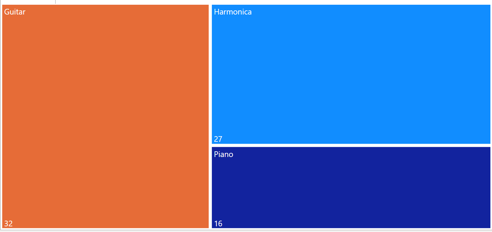

Album Types
Welcome to my Album Types page! Here we will explore the different types of albums Dylan has released over the years as well as specific information about his albums. We will analyze data regarding tracks,genres and more!
Power BI Visualizations
These visualizations explore the rate of production over the years and what types of album Dylan released.

As the tree map shows,the og albums have the lowest number of tracks among both periods. The average number of track count of the live and comp(compilation) albums among the late Dylan period are higher than the early Dylan period.This could be because the live and comp albums for the late Dylan period also included music from the early Dylan period as well.Wheras all the songs in the live and comp albums in the early Dylan period are restricted to just music that was released during that period.
Most Frequently Used Instruments Throughout Career
The data shows that the late Dylan period had a significantly higher number of tracks released. The previos tree map showed that there was a higher average of tracks in the late period as well.The higher number of live and comp tracks are most likely contributing factors to why the number is so much higher than the early period.

The data shows that Dylan released more comp albums than live albums.This is most likely because it is generally easier to produce comp albums than live albums. Comp albums are made by taking already existing materrial and compiling the works together.The live albums require more logistics such as talent availiability that could make the production of live albums more difficult than comp albums.
Kumu.io
SVGs
Early on in the project,I collected txt files from eight of Dylan's albums. Four are from his early years(The Freewhiln' Bob Dylan ,Highway 61 Revisited,Blood on the Tracks,Slow Train Coming) and four are from his late years,(Infidels,Empire Burlesque,Time Out of Mind and finally Rough and Rowdy Ways). I chose these albums not only because they are some of my favorite albums of his but because they are representative of his career. The early albums I chose are a similar genres and emphasize his folk and protest music. The late albums I chose represent his experimentation of different genres and music styles. I used AntConc to find the verse frequency among the albums.
This bar graph compares the average number of verses per among the selected albums.
Dylan is consistent among his entire career in verses.
Dylan's average song length increases by almost one minute. Over the years he gets more experimental and makes longer pieces.
Over the years,Dylan is consistent about what genres his albums are. At least half of his original albums are considered either folk,folk rock or both.